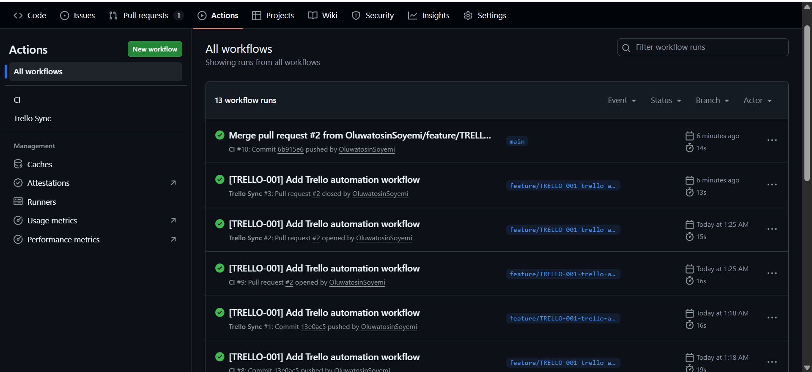
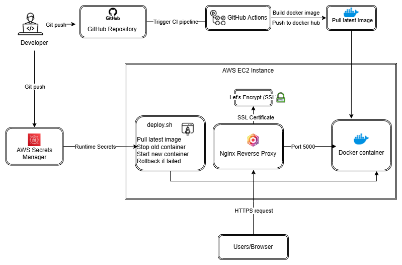

These projects reflect my hands-on work in cloud deployment, CI/CD automation,
Infrastructure as Code, and GitOps workflows.
Project 1

GitOps Workflow & CI Automation
Tools Used: GitHub Actions, GitHub, Trello, Git
Designed a GitOps workflow integrating GitHub, Trello, and CI pipelines.
Enforced structured branching, pull request validation, and automated checks
to improve code quality and delivery reliability.
View Project →
Project 2

Containerized Web App with Secure CI/CD & EC2 Deployment
Tools Used: Docker, GitHub Actions, AWS EC2, Nginx, HTTPS, Linux
Built and deployed a production-ready containerized web application on AWS EC2.
Implemented secure CI/CD workflows, reverse proxy setup with Nginx, HTTPS,
health checks, and rollback strategies.
View Project →
Project 3
Jenkins CI/CD Pipeline
Automated CI/CD Pipeline with Jenkins & Docker
Tools Used: Jenkins, Docker, Java, Maven, CI/CD
Built a Jenkins pipeline to automate build, test, and deployment workflows.
Integrated Docker for containerized delivery and improved consistency in
application deployment processes.
View Project →
Project 4
Terraform AWS Setup
Terraform Infrastructure Setup on AWS
Tools Used: Terraform, AWS EC2, AWS S3
Provisioned AWS resources such as EC2 instances and S3 buckets using reusable
Terraform configurations. Applied Infrastructure as Code principles for
scalable and repeatable cloud deployment.
View GitHub →